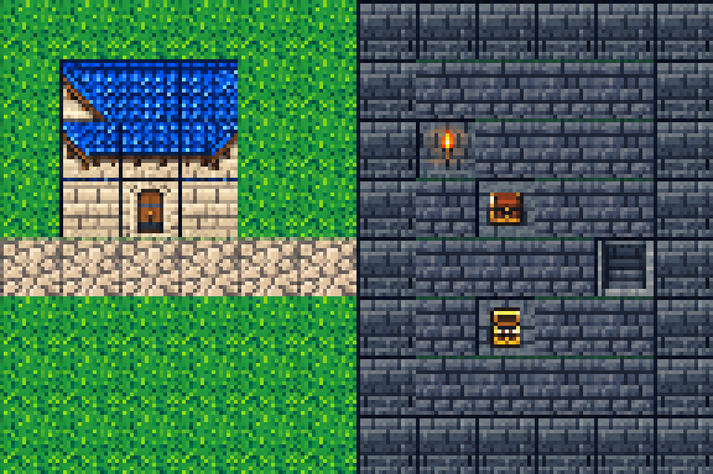
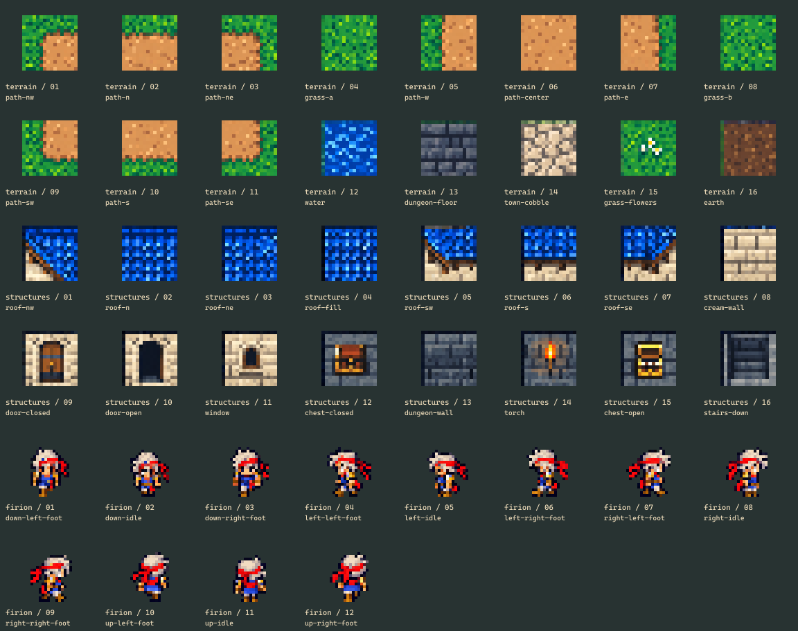
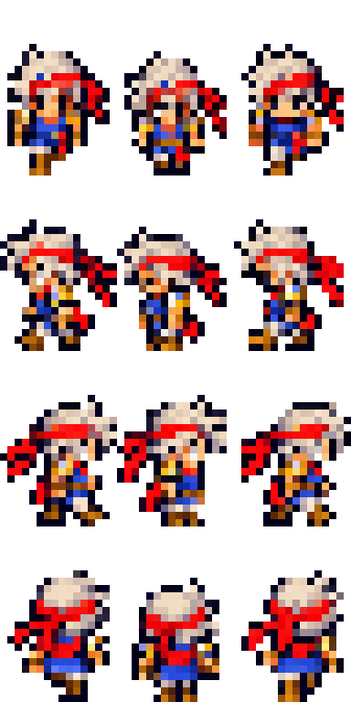
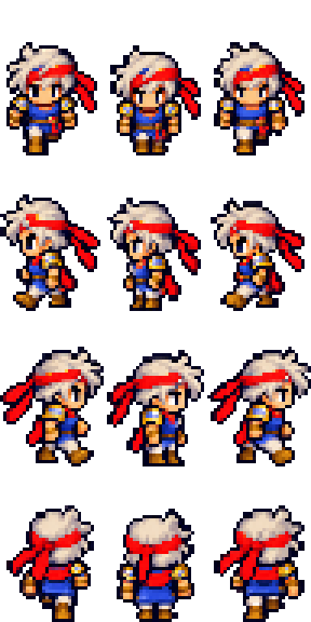
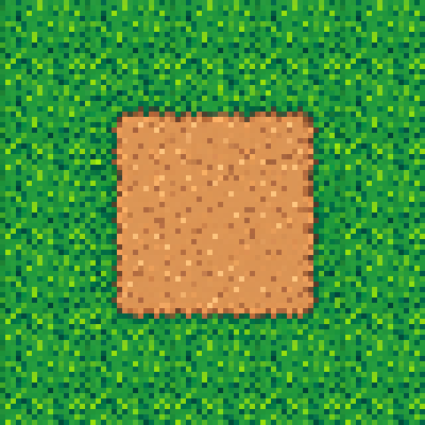
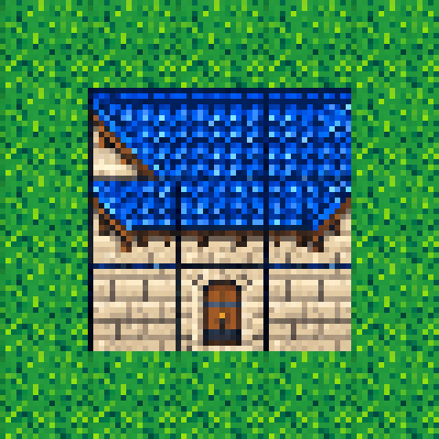

BATCH 01 · MATCHING THE APPROVED DIRECTION
The first pieces
of the world.
Emerald ground, blue roofs and water, cream masonry, cool dungeon stone, and Firion’s red bandana. These are individual native-size PNG assets, with source masters and a reproducible export pipeline.
Assembled material test
This miniature scene uses the actual exported tiles. The arrangement is a join/readability test, not a reconstruction of an original map.

Native textures enlarged with nearest-neighbor sampling. Inspect repetitive grass patterns, roof joins, walls and prop readability.
All 44 assets

Firion in motion
Four directions, each with left-step, idle and right-step frames. One shared scale and bottom anchor keep the character’s footprint consistent. Small native frames simplify the approved costume; animation polish remains a visual review item.
Open animated walk-cycle preview →

Path joins

Roof and masonry

Unity integration
The importer applies point filtering, uncompressed textures and consistent pivots. A separate editor command assembles a native 256 × 240 art-review scene with all four walk directions.
Source/API checks do not establish Unity playtest evidence. The earlier editor run was blocked by licensing; import and Play mode still need verification in a licensed editor.